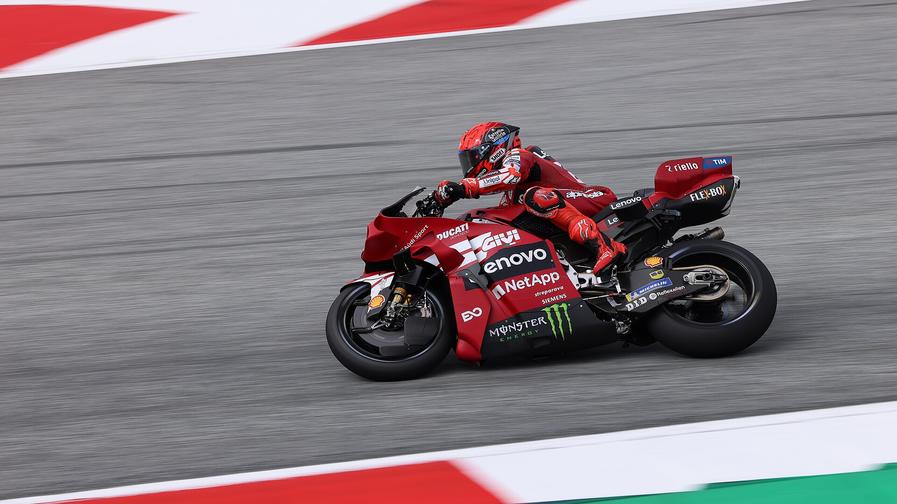

O Grande Prêmio da Austrália de MotoGP 2026 teve um desfecho incomum em Phillip Island. A corrida principal, prevista para este domingo, 25 de outubro, foi cancelada porque as condições meteorológicas impediram a operação segura do helicóptero médico. A forte chuva, os ventos e a baixa visibilidade comprometeram a estrutura de atendimento de emergência necessária para a realização das provas.
Com a decisão, a corrida Sprint de sábado, 24 de outubro, acabou sendo a única disputa do fim de semana com pontos para o Mundial da categoria principal. Marc Márquez venceu pela Ducati, superou a pressão de Jorge Martín e assumiu a liderança do campeonato. O piloto da Aprilia, que havia chegado à Austrália na primeira posição da classificação, sofreu uma queda enquanto disputava a vitória e deixou Phillip Island com uma fratura no braço direito.
O episódio ganhou importância ainda maior porque marcou a última passagem da MotoGP por Phillip Island antes da transferência do Grande Prêmio da Austrália para Adelaide, prevista para 2027. Uma etapa que deveria celebrar a história do circuito terminou sem a corrida principal, mas deixou acontecimentos decisivos para a temporada..
Márquez conquista a pole position
Antes da vitória na Sprint, Marc Márquez já havia demonstrado sua força durante a classificação de sábado. O piloto da Ducati Lenovo Team, conquistou a pole position com o tempo de 1min34s203, mesmo após sofrer uma queda na curva 4 e precisar utilizar sua segunda moto.
Primeira fila do grid:
- 1º Marc Márquez — Ducati Lenovo
- 2º Álex Márquez — Gresini Ducati
- 3º Johann Zarco — LCR Honda
Segunda fila do grid:
- 4º Jorge Martín — Aprilia
- 5º Jack Miller — Pramac Yamaha
- 6º Raúl Fernández — Trackhouse Aprilia
Representante brasileiro:
- 10º Diogo Moreira — LCR Honda
Márquez vence a Sprint após batalha com Jorge Martín
A corrida Sprint foi marcada por uma disputa intensa entre os dois principais candidatos ao título mundial.
Marc Márquez largou bem e assumiu a primeira posição. Jorge Martín também teve uma saída forte e rapidamente se colocou entre os primeiros, iniciando uma sequência de ataques contra o rival da Ducati.
Os pilotos trocaram posições e protagonizaram ultrapassagens em diferentes pontos de Phillip Island. Martín chegou a assumir a liderança, mas Márquez respondeu e recuperou a primeira colocação.
Na oitava volta, o confronto terminou de maneira dramática. Martín perdeu o controle da Aprilia na curva 8 e caiu, abandonando a corrida.
O acidente deixou Marc Márquez livre da pressão direta do principal concorrente ao título. Álex Márquez assumiu a segunda posição, enquanto Fabio Di Giannantonio avançou para completar as três primeiras colocações.
Marc administrou a vantagem nas voltas finais e conquistou sua nona vitória em corridas Sprint na temporada de 2026.
Álex Márquez terminou apenas 0s323 atrás do irmão, enquanto Di Giannantonio completou o pódio, garantindo três motos Ducati nas primeiras posições.
A classificação oficial da corrida curta, considerada a penalização aplicada posteriormente a Ai Ogura, ficou assim:
- 1º Marc Márquez — Ducati Lenovo — 12 pontos
- 2º Álex Márquez — Gresini Ducati — 9 pontos
- 3º Fabio Di Giannantonio — VR46 Ducati — 7 pontos
- 4º Marco Bezzecchi — Aprilia — 6 pontos
- 5º Pedro Acosta — KTM — 5 pontos
- 6º Brad Binder — KTM — 4 pontos
- 7º Jack Miller — Pramac Yamaha — 3 pontos
- 8º Diogo Moreira — LCR Honda — 2 pontos
- 9º Iker Lecuona — Gresini Ducati — 1 ponto
Ai Ogura havia terminado a Sprint na sexta posição, mas recebeu uma penalização de oito segundos por uma infração relacionada à pressão dos pneus.
A punição alterou a classificação e beneficiou quatro pilotos, incluindo o brasileiro Diogo Moreira, que avançou do nono para o oitavo lugar.
Jorge Martín sofre fratura
A queda do piloto representou um dos momentos mais importantes do fim de semana australiano.
O espanhol chegou à etapa liderando o Campeonato Mundial e estava envolvido diretamente na disputa pela vitória da Sprint quando sofreu o acidente.
Martín foi encaminhado ao centro médico do circuito. Os primeiros exames identificaram uma fratura na região distal do rádio, um dos ossos do antebraço, próximo ao punho.
Inicialmente, também existia suspeita de uma lesão na ulna. Entretanto, a tomografia realizada posteriormente confirmou apenas uma fratura sem desvio no rádio.
A Aprilia informou que o piloto não retornaria imediatamente à Espanha e receberia o tratamento necessário nos dias seguintes.
Além de encerrar sua participação na Sprint, o acidente levou os médicos a declará-lo inapto para disputar a corrida principal que estava programada para domingo.
A lesão adicionou um elemento importante à disputa pelo Campeonato Mundial, pois Martín perdeu a liderança justamente em um confronto direto com Marc Márquez.
Diogo Moreira ganha posições na MotoGP
O GP da Austrália de 2026 também teve um resultado relevante para o motociclismo brasileiro.
Diogo Moreira, piloto da LCR Honda, terminou a corrida Sprint entre os nove competidores que receberam pontos.
O brasileiro largou da décima posição e cruzou a linha de chegada em nono. Depois da penalização de Ai Ogura, avançou para o oitavo lugar e recebeu dois pontos.
O desempenho colocou Moreira na 14ª posição do Campeonato Mundial, com 76 pontos após a etapa australiana.
O resultado teve importância em sua temporada de estreia na MotoGP, sobretudo por representar mais uma chegada na zona de pontuação em uma corrida curta.
Classificação da MotoGP 2026 após o GP da Austrália
A vitória de Marc Márquez na Sprint e o abandono de Jorge Martín provocaram uma mudança na liderança do Campeonato Mundial.
A classificação após a etapa de Phillip Island ficou assim:
- 1º Marc Márquez — 365 pontos
- 2º Jorge Martín — 355 pontos
- 3º Marco Bezzecchi — 315 pontos
- 4º Pedro Acosta — 263 pontos
- 5º Ai Ogura — 259 pontos
- 6º Fabio Di Giannantonio — 252 pontos
- 7º Raúl Fernández — 236 pontos
- 8º Álex Márquez — 181 pontos
- 9º Francesco Bagnaia — 166 pontos
- 10º Fermín Aldeguer — 125 pontos
- 11º Enea Bastianini — 122 pontos
- 12º Luca Marini — 108 pontos
- 13º Brad Binder — 108 pontos
- 14º Diogo Moreira — 76 pontos
- 15º Fabio Quartararo — 74 pontos
A classificação evidencia a importância da corrida Sprint na disputa de 2026. Mesmo sem a realização do Grande Prêmio principal, os 12 pontos conquistados por Márquez foram suficientes para alterar a primeira posição do campeonato.
A ausência da prova longa também impediu que o espanhol ampliasse sua vantagem naquele fim de semana, enquanto Martín, lesionado, permaneceu próximo na tabela.
Phillip Island encerra sua história na MotoGP
O cancelamento da corrida principal teve um significado especial porque a edição de 2026 marcou a despedida de Phillip Island do calendário da MotoGP.
O circuito australiano construiu uma identidade própria no motociclismo mundial, especialmente pelo traçado de alta velocidade, pelas curvas rápidas e pelas disputas que favoreciam mudanças constantes de posição.
Phillip Island recebeu corridas históricas e foi palco de apresentações de grandes nomes da categoria, como Mick Doohan, Casey Stoner e Valentino Rossi.
A última edição da MotoGP no circuito deveria terminar com a corrida principal de domingo. Entretanto, as condições meteorológicas impediram a realização desse encerramento esportivo.
Como forma de homenagear a pista e os torcedores, os pilotos realizaram duas voltas em desfile atrás do safety car.
Depois, pararam na reta principal para agradecer ao público que permaneceu nas arquibancadas e nas áreas ao redor do circuito, mesmo diante do mau tempo.
A homenagem substituiu a corrida que seria o último capítulo da MotoGP em Phillip Island, transformando a despedida em um momento simbólico para pilotos, equipes e fãs.
A troca de circuito
A mudança faz parte de uma nova etapa do Grande Prêmio da Austrália.
Em fevereiro de 2026, a MotoGP anunciou oficialmente a transferência da competição para Adelaide a partir de 2027, por meio de um acordo inicialmente previsto até 2032.
O novo projeto prevê a realização das corridas em um circuito urbano no centro da cidade australiana.
Em agosto de 2026, foi apresentado o traçado de Adelaide, com 4,13 quilômetros e 15 curvas, desenvolvido para atender às exigências de segurança do motociclismo.
A primeira edição no novo circuito está programada para 12 a 14 de novembro de 2027.
A mudança representa uma transformação importante para a MotoGP na Austrália. Phillip Island era reconhecido como um circuito permanente tradicional, enquanto Adelaide foi concebido para oferecer uma experiência de Grande Prêmio em ambiente urbano.
O episódio desta temporada, portanto, passou a representar não apenas o encerramento de uma etapa esportiva, mas também a transição entre dois modelos de circuito para o campeonato.
Por tudo isso, o Grande Prêmio da Austrália de 2026 permanece como um capítulo singular da MotoGP: uma etapa sem vencedor na prova longa, mas com consequências diretas para o campeonato, protagonismo de Marc Márquez, um momento decisivo na trajetória de Jorge Martín e uma despedida histórica de Phillip Island.